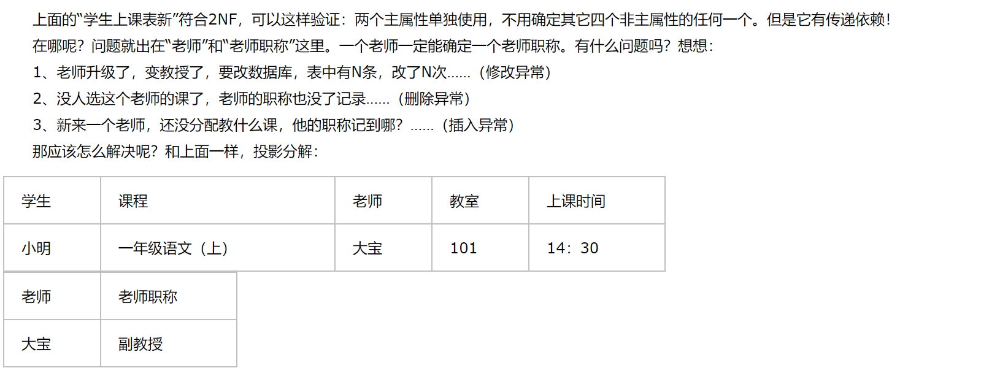

数据库复习笔记
本文是我复习数据库所做的知识总结，选用的数据库主要为：MySQL。更详细的内容可以看牛客网上这篇https://www.nowcoder.com/discuss/150059?type=0&order=7&pos=43&page=2&source_id=discuss_center_0&channel=2000。
数据库基本概念
数据库定义
数据库（Database）是按照数据结构来组织、存储和管理数据的仓库。
每个数据库都有一个或多个不同的 API 用于创建，访问，管理，搜索和复制所保存的数据。
我们也可以将数据存储在文件中，但是在文件中读写数据速度相对较慢。还存在着以下的缺陷:
- 共享性差
- 安全性差
- 数据不一致
- 数据独立性差
- 数据冗余大
- 数据删除、添加、修改等麻烦
数据库基本概念
数据库的四大基本概念为：
- 数据（Data）：数据库中存储的基本对象，是事物的符号记录。
- 特点：数据的解释是指对数据含义的说明。
- 数据库（DataBase，DB）：数据库是长期储存在计算机内、有组织的、可共享的大量数据的集合。存储的是数据以及数据之间的联系。
- 特点：
- 数据结构化，统一管理和控制
- 较小的冗余度
- 较高的独立性、易扩展性、共享性
- 特点：
- 数据库管理系统（DBMS）：位于用户与操作系统之间的一层数据管理软件。用于科学地组织和存储数据、高效地获取和维护数据。属于系统软件。主要功能是定义数据库。（MySQL、Oracle、SQL Sever等都属于DBMS）
- 主要功能：
- 数据定义功能：DBMS提供数据描述语言（DDL），用户可通过它来定义数据对象。
- 数据操纵功能：DBMS还提供数据操纵语言（DML），实现对数据库的基本操作（CURD）：查询、插入、删除和修改。
- 数据库的运行管理：这是DBMS运行时的核心部分，它包括并发控制，安全性检查，完整性约束条件的检查和执行，发生故障后的恢复等。
- 数据库的建立和维护功能 ：它包括数据库初始数据的输入及转换，数据库的转储与恢复，数据库的重组功能和性能的监视与分析功能等。
- 主要功能：
- 数据库系统（DBS） ：核心是数据库管理模型。是在文件系统上发展起来的，计算机系统引用数据库后的系统。 由DB、DBMS（及其开发工具）、应用系统、DBA（数据库管理员）构成。能够减少冗余、提高数据独立性、并集中检查数据完整性。
- DBA数据库管理员的主要职责为：
- 决定DB中的信息内容和结构；
- 决定DB的存储结构和存取策略；
- 定义数据的安全性要求和完整性约束条件；
- 监控数据库的使用和运行。
- DBA数据库管理员的主要职责为：
三级模式结构
模式（全体数据逻辑结构）
模式（逻辑模式）：数据库中全体数据的逻辑结构和特征的描述。一个数据库只有一个模式，定义数据的逻辑结构，如：数据之间的联系，与数据有关的安全性、完整性要求。
关系型数据库中的表属于模式。
外模式（局部数据逻辑结构）
外模式（子模式）：数据库中局部数据的逻辑结构和特征的描述。一个数据库可以有多个外模式。保证数据库安全性的有力措施。是模式的逻辑子集。
内模式（全体数据物理结构）
内模式（存储模式）：数据物理结构和存储方式的描述。一个数据库只有一个内模式。是数据在数据库内部的表达方式，物理结构指的是数据在硬盘上是怎么被保存的。
二级映象
三级模式是对数据的三个抽象级别，二级映象在DBMS内部实现这三个抽象层次的联系和转换
外模式/模式映像
定义外模式与模式之间的对应关系。保证数据的逻辑独立性。
逻辑独立性：用户的应用程序与数据库中的逻辑结构是相互独立的。
模式/内模式映像
定义数据全局逻辑结构与存储结构之间的对应关系。 保证数据的物理独立性。
物理独立性：用户的应用程序与储存在硬盘上的数据库中的数据是相互独立的。
关系模型
关系模型概述
关系模型的数据结构是：二维表结构，它是关系型数据库的基础。
关系数据模型由关系数据结构、关系操作和关系完整性约束三部分组成。
关系必须是规范化的，满足一定的规范条件。
关系数据库必须满足1NF范式，即一张表中不包含子表。（关系的每一个分量必须是一个不可分的数据项, 不允许表中还有表）
关系模型只是常用的数据模型的一种，数据模型按照数据之间的联系可以划分为：
- 层次模型
- 网状模型
- 关系模型
- 面向对象模型
关系模型的基本概念
关系模型在1970年E.F.Codd提出，操作语言是结构化查询语言SQL（Structural Querry Language）
- 关系：通常指一张表
- 元组：表中的一行记录
- 属性：表中的一列，有属性名和属性值（分量）
- 分量：元组中的一个属性值
- 关系模式：对关系的描述，通常有几张表就有几个关系模式
- 域：属性值的取值范围
- 键：
- 超键（关键字）：在关系中能唯一标识元组的属性集
- 候选键：不含有多余属性的超键
- 主键：用户选作元组标识的候选键（人为设定）
- 外键：如果关系模式R中的属性k是其他关系模式的主键，则k是R中的外键（表与表的关系通过外键来描述）外键表中的外键不能有主键表中不存在的数据。（保证数据的完整性和一致性）
- 主属性：一个属性只要在任何一个候选键中出现过，这个属性就是主属性。
- 非主属性：与上面相反，没有在任何候选码中出现过，这个属性就是非主属性。
关系的完整性约束
- 实体完整性：关系必须有主键，且主键不能重复，不能为空
- 参照完整性：以外键的形式维护实体间的引用关系，可以为空或者值为被参照关系的主键值
- 用户自定义完整性：用户由应用环境决定的针对具体关系数据库的约束（属性类型等）
关系代数
我们以如下的两张表作为原始数据：

并操作（Union）
关系（表） R 与关系 S 的并（∪）由属于 R 或属于 S 的元组（记录）组成。

差操作（except）
关系R与关系S的差由属于R而不属于S的所有元组组成。

交操作（intersection）
关系R与关系S的差由属于R且属于S的所有元组组成。

笛卡尔积（cartesian product）
这里的笛卡尔积严格地讲是广义笛卡尔积。在不会出现混淆的情况下广义笛卡尔积也称为笛卡尔积。
两个分别为n目和m目的关系R和S的广义笛卡尔积是一个n+m列的元组的集合。元组的前n列是关系R的一个元组，后m列是关系S的一个元组。若R有k1个元组，S有k2个元组，则关系R和关系S的广义笛卡尔积有k1×k2个元组。
R中的每一行元素与S中的每一行元素连接。
相当于：select 列名 from 表A，表B 或者select 列名 from 表A join 表B

投影（projection）
关系R上的投影是从R中选择出若干属性列组成新的关系。
相当于：select 列名 from 表名。
选择（selection）
选择又称为限制（Restriction）。它是在关系R中选择满足给定条件的诸元组。
相当于：select * from 表名 where 条件。
除（division）
除法运算是一个复合的二目运算。如果把笛卡尔积看作“乘法”运算，则除法运算可以看作这个“乘法”的逆运算。
若T=R÷S，则S×T的结果应该全部包含在R中。

连接（join）
关系R与关系S的连接运算是从两个关系的广义笛卡尔积中选取属性间满足一定条件的元组形成一个新的连接。（如果不加任何条件，那么默认的连接就是两张表的广义笛卡尔积）
等值连接（equal join）
从关系R和S的广义笛卡尔积中选取A、B属性值相等的那些元组。
对应的SQL语句为：select * from R join S on R.A = S.B
自然连接（natural join）
自然连接是一种特殊的等值连接，它要求两个关系中进行比较的分量必须是相同的属性组，并且在结果中把属性重复的列去掉。
对应的SQL语句为：select * from R natural join S。
等值连接与自然连接的区别和联系：
1、自然连接一定是等值连接，但等值连接不一定是自然连接。
2、等值连接要求相等的分量，不一定是公共属性；而自然连接要求相等的分量必须是公共属性。
3、等值连接不把重复的属性除去；而自然连接要把重复的属性除去。
内连接（inner join）
内连接是将两张表中共有某属性值的记录挑选出来。与等值连接类似，二者都是取交集。

左外连接（left join）
在自然连接的基础上，保证左表完全显示，右表若不存在则用null填满。

右外连接（right join）
在自然连接的基础上，保证右表完全显示，左表若不存在则用null填满。

全外连接（OUTER JOIN）
左连接+右连接+去重=全连接

函数依赖
平凡的函数依赖
如果X→Y，但Y∈X，则称X→Y是平凡的函数依赖.
非平凡的函数依赖
如果X→Y，但Y∉X，则称X→Y是非平凡的函数依赖。通常情况下总是讨论非平凡的函数依赖.
完全函数依赖
如果存在 X 属性集（注意是集合，说明是联合主键）决定唯一的 Y ，且 X 中的任一子集都不能决定 唯一的 Y，则 Y 完全依赖于 X。
例子：学生数学成绩完全由该学生的学号和数学课决定，所以数学课成绩完全依赖于（学号，数学课）
部分函数依赖
如果存在 X 属性集（注意是集合，说明是联合主键）决定唯一的 Y ，且 X 中的任一子集也可以决定 唯一的 Y，则 Y 部分依赖于 X。
例子：学生学号和姓名可以决定唯一的学生，但是学生号也可以决定唯一的学生。
传递函数依赖
在R(U,F)中，如果X→Y，Y∉X，Y→Z，Y不完全函数依赖于X，则称Z对X传递依赖。
例如：书的出版编号是唯一，版权归出版社所有，所以只能由该出版社出版。所以存在函数依赖：书出版编号—>出版社名，出版社名—>出版社地址，但是出版社名不能决定唯一的出版书编号（除非出版社只出版过一本书，那我没话说?），则有出版书编号传递依赖于出版社地址。
关系范式
范式是符合某一种级别的关系模式的集合。
设计性能较优的关系模式称为规范化，规范化主要的理论依据是关系规范化理论。目的是消除插入、删除异常和数据冗余，提高数据库性能。
一般而言，我们只要让数据库中的所有表符合第三范式或者BCNF即可。
数据冗余
数据冗余是指各个数据文件中存在重复的数据。会导致：
- 浪费存储空间，降低检索效率
- 潜在的数据不一致性
在文件管理系统中各数据文件中难免有许多数据相互重复，数据的冗余度比较大。数据库系统更注重文件之间的联系。数据库系统中的数据具有共享性，因而尽可能地避免了数据的重复存储，减少和控制了数据的冗余。
然而，DBS中也不是不存在数据冗余的现象。当存在传递依赖或者部分依赖时，必然会出现数据冗余现象，我们要依据关系范式进行数据表分解，从而减轻冗余。
第一范式1NF（原子性）
表中的每一列都是不可分解的基本数据项，每一个属性不可拥有多个值。是关系数据库的基本要求。需要满足原子性。
第二范式2NF（消除部分依赖）
前提是满足1NF。此外：一个表必须有主键，非主属性必须完全依赖于主键。（消除非主属性对主键的部分依赖）
第三范式3NF（消除传递依赖）
前提是满足2NF。此外：任意一个非主属性都不可传递依赖于主键。（消除非主属性对主键的传递依赖）（要求依赖右侧全部为候选键或者它的成员）

BC范式BCNF（主属性不能依赖于主属性）
前途是满足3NF。此外：不能存在主键的一部分被另一部分或者非主键的其它部分所决定。（消除所有部分依赖与传递依赖）（要求依赖右侧全部为候选键）
第四范式
要求把同一表内的多对多关系删除。
第五范式
从最终结构重新建立原始结构。
闭包
闭包指的是：由一个属性或者属性组直接或间接推导出的所有属性的集合。
求闭包的算法：循环迭代，每一次迭代过程中找到能够被当前闭包中的属性直接推出的属性加入到闭包中。直到无法加入新属性。
关系型数据库和非关系型数据库
| 数据库 类型 | 特性 | 优点 | 缺点 |
|---|---|---|---|
| 关系型数据库：SQLite、Oracle、mysql | 1、关系型数据库，是指采用了关系模型来组织数据的数据库； 2、关系型数据库的最大特点就是事务的一致性； 3、简单来说，关系模型指的就是二维表格模型，而一个关系型数据库就是由二维表及其之间的联系所组成的一个数据组织。 |
1、容易理解：二维表结构是非常贴近逻辑世界一个概念，关系模型相对网状、层次等其他模型来说更容易理解； 2、使用方便：通用的SQL语言使得操作关系型数据库非常方便； 3、易于维护：丰富的完整性(实体完整性、参照完整性和用户定义的完整性)大大减低了数据冗余和数据不一致的概率； 4、支持SQL，可用于复杂的查询。 |
1、为了维护一致性所付出的巨大代价就是其读写性能比较差； 2、固定的表结构； 3、不适合高并发读写需求； 4、不适合海量数据的高效率读写； |
| 非关系型数据库：MongoDb、redis、HBase | 1、使用键值对（也可以是文档形式、图片形式等）存储数据； 2、支持分布式； 3、一般不支持事务的ACID特性； 4、非关系型数据库严格上不是一种数据库，应该是一种数据结构化存储方法的集合。 |
1、无需经过sql层的解析，读写性能很高； 2、基于键值对，数据没有耦合性，容易扩展； 3、存储数据的格式：nosql的存储格式是key,value形式、文档形式、图片形式等等，而关系型数据库则只支持基础类型。 |
1、不提供sql支持，学习和使用成本较高； 2、无事务处理，附加功能bi和报表等支持也不好； |
数据的持久存储，尤其是海量数据的持久存储，还是需要一种关系数据库。
MySQL基础
简介
MySQL是一个关系型数据库管理系统，由瑞典MySQL AB 公司开发，属于 Oracle 旗下产品。MySQL 是最流行的关系型数据库管理系统之一，在 WEB 应用方面，MySQL是最好的 RDBMS 软件之一。在Java企业级开发中非常常用，因为 MySQL 是开源免费的，并且方便扩展。
MySQL权限表
MySQL服务器通过权限表来控制用户对数据库的访问，权限表存放在mysql数据库里，由mysql_install_db脚本初始化。这些权限表分别为user，db，table_priv，columns_priv和host。下面分别介绍一下这些表的结构和内容：
user权限表：记录允许连接到服务器的用户帐号信息，里面的权限是全局级的。
db权限表：记录各个帐号在各个数据库上的操作权限，，里面的权限是数据库级的。
table_priv权限表：记录数据表级的操作权限。
columns_priv权限表：记录数据列级的操作权限。
host权限表：配合db权限表对给定主机上数据库级操作权限作更细致的控制。这个权限表不受GRANT和
REVOKE语句的影响。
MySQL中的权限管理：
授予权限：
grant 权限 on 数据库对象 to 用户撤销权限：
revoke 权限 on 数据库对象 from 用户
MySQL日志
MySQL的常见日志log分为以下类型：
| 日志类型 | 日志内容 |
|---|---|
| 错误日志 | mysql 启动、停止和运行过程中出现的异常 |
| 常规操作日志 | 已创建客户端连接和客户端处理记录 |
| 二进制日志 | 数据变更日志(可用于同步) |
| 转存日志 | 从主服务器同步的数据记录 |
| 慢查询日志 | 耗时超过 long_query_time 所设置时间的查询 |
| DDL日志（元日志） | ddl 语句执行的元数据操作 |
其中，二进制日志binlog是实际最常使用的日志，因为它可以对数据库进行恢复。
binlog的录入格式为：
- Statement（只记录修改语句）：只记录每条修改数据的SQL执行语句；但还必须记录每条语句在执行的时候的一些相关信息，确保所有语句能在slave得到和在master端（主从复制）执行时候相同的结果。但一些函数功能不能被复制。
- row（只记录修改结果）：不记录SQL的上下语句信息，只记录那一条记录被修改成什么了；解决了Statement的问题，但单语句更新（删除）表的行数过多，会导致形成大量binlog。
- Mixedlevel（混合）：前两个的混合使用，一般的语句修改用Statement，一些函数复制等用row，根据执行的语句来选择使用哪种方式。
MySQL数据类型
MySQL中定义数据字段的类型对数据库的优化是非常重要的。
MySQL支持多种类型，大致可以分为三类：数值、日期/时间和字符串(字符)类型。
数值类型
| 类型 | 大小 | 范围（有符号） | 范围（无符号） | 用途 |
|---|---|---|---|---|
| TINYINT | 1 byte | (-128，127) | (0，255) | 小整数值 |
| SMALLINT | 2 bytes | (-32 768，32 767) | (0，65 535) | 大整数值 |
| MEDIUMINT | 3 bytes | (-8 388 608，8 388 607) | (0，16 777 215) | 大整数值 |
| INT或INTEGER | 4 bytes | (-2 147 483 648，2 147 483 647) | (0，4 294 967 295) | 大整数值 |
| BIGINT | 8 bytes | (-9,223,372,036,854,775,808，9 223 372 036 854 775 807) | (0，18 446 744 073 709 551 615) | 极大整数值 |
| FLOAT | 4 bytes | (-3.402 823 466 E+38，-1.175 494 351 E-38)，0，(1.175 494 351 E-38，3.402 823 466 351 E+38) | 0，(1.175 494 351 E-38，3.402 823 466 E+38) | 单精度 浮点数值 |
| DOUBLE | 8 bytes | (-1.797 693 134 862 315 7 E+308，-2.225 073 858 507 201 4 E-308)，0，(2.225 073 858 507 201 4 E-308，1.797 693 134 862 315 7 E+308) | 0，(2.225 073 858 507 201 4 E-308，1.797 693 134 862 315 7 E+308) | 双精度 浮点数值 |
| DECIMAL | 对DECIMAL(M,D) ，如果M>D，为M+2否则为D+2 | 依赖于M和D的值 | 依赖于M和D的值 | 小数值 |
日期和时间类型
每个时间类型有一个有效值范围和一个”零”值，当指定不合法的MySQL不能表示的值时使用”零”值。
| 类型 | 大小 ( bytes) | 范围 | 格式 | 用途 |
|---|---|---|---|---|
| DATE | 3 | 1000-01-01/9999-12-31 | YYYY-MM-DD | 日期值 |
| TIME | 3 | ‘-838:59:59’/‘838:59:59’ | HH:MM:SS | 时间值或持续时间 |
| YEAR | 1 | 1901/2155 | YYYY | 年份值 |
| DATETIME | 8 | 1000-01-01 00:00:00/9999-12-31 23:59:59 | YYYY-MM-DD HH:MM:SS | 混合日期和时间值 |
| TIMESTAMP | 4 | 1970-01-01 00:00:00/2038结束时间是第 2147483647 秒，北京时间 2038-1-19 11:14:07，格林尼治时间 2038年1月19日 凌晨 03:14:07 | YYYYMMDD HHMMSS | 混合日期和时间值，时间戳 |
字符类型
| 类型 | 大小 | 用途 |
|---|---|---|
| CHAR | 0-255 bytes | 定长字符串 |
| VARCHAR | 0-65535 bytes | 变长字符串 |
| TINYBLOB | 0-255 bytes | 不超过 255 个字符的二进制字符串 |
| TINYTEXT | 0-255 bytes | 短文本字符串 |
| BLOB | 0-65 535 bytes | 二进制形式的长文本数据 |
| TEXT | 0-65 535 bytes | 长文本数据 |
| MEDIUMBLOB | 0-16 777 215 bytes | 二进制形式的中等长度文本数据 |
| MEDIUMTEXT | 0-16 777 215 bytes | 中等长度文本数据 |
| LONGBLOB | 0-4 294 967 295 bytes | 二进制形式的极大文本数据 |
| LONGTEXT | 0-4 294 967 295 bytes | 极大文本数据 |
- char（n）和 varchar（n） 中括号中 n 代表字符的个数，并不代表字节个数
- CHAR 和 VARCHAR 类型类似，但它们保存和检索的方式不同。它们的最大长度和是否尾部空格被保留等方面也不同。在存储或检索过程中不进行大小写转换。
- 定义一个char[10]和varchar[10],如果存进去的是‘abcd’,那么char所占的长度依然为10，除了字符‘abcd’外，后面跟六个空格，而varchar就立马把长度变为4了，取数据的时候，char类型的要用trim去掉多余的空格，而varchar是不需要的
- char的存取数度还是要比varchar要快得多，因为其长度固定，方便程序的存储与查找；但是char也为此付出的是空间的代价，因为其长度固定，所以难免会有多余的空格占位符占据空间，可谓是以空间换取时间效率，而varchar是以空间效率为首位的。
- char的存储方式是，对英文字符（ASCII）占用1个字节，对一个汉字占用2个字节；而varchar的存储方式是，对每个英文字符占用2个字节，汉字也占用2个字节，两者的存储数据都非unicode的字符数据。
MySQL基本操作
数据库操作
我们可以在登陆 MySQL 服务后，使用 create 命令创建数据库，语法如下:
CREATE DATABASE 数据库名;在删除数据库过程中，务必要十分谨慎，因为在执行删除命令后，所有数据将会消失。我们使用drop命令删除数据库：
drop database 数据库名;修改数据库属性，包括更改数据库名称、数据库所有者等等：
ALTER DATABASE yyDB RENAME TO yyDBnew;
ALTER DATABASE yyDB OWNER TO yy;数据表操作
创建数据表
我们使用create命令创建数据表，同时可以指定每一列的数据类型和属性等。
CREATE TABLE IF NOT EXISTS `runoob_tbl`(
`runoob_id` INT UNSIGNED AUTO_INCREMENT,
`runoob_title` VARCHAR(100) NOT NULL,
`runoob_author` VARCHAR(40) NOT NULL,
`submission_date` DATE,
PRIMARY KEY ( `runoob_id` )
)ENGINE=InnoDB DEFAULT CHARSET=utf8;需要注意，这里的列名被反引号框了起来，而不是单引号。
实例解析：
- 如果你不想字段为 NULL 可以设置字段的属性为 NOT NULL， 在操作数据库时如果输入该字段的数据为NULL ，就会报错。
- AUTO_INCREMENT定义列为自增的属性，一般用于主键，数值会自动加1。
- PRIMARY KEY关键字用于定义列为主键。 您可以使用多列来定义主键，列间以逗号分隔。
- ENGINE 设置存储引擎，CHARSET 设置编码。
MySQL 字段属性应该尽量设置为 NOT NULL，NULL类型的字段会导致种种弊端，例如：
- 含有空值的列很难进行查询优化，而且对表索引时不会存储 NULL 值的，所以如果索引的字段可以为 NULL，索引的效率会下降很多。因为它们使得索引、索引的统计信息以及比较运算更加复杂。你应该用 0、一个特殊的值或者一个空串代替空值。
- 联表查询的时候，例如 LEFT JOIN table2，若没有记录，则查找出的 table2 字段都是 null。假如 table2 有些字段本身可以是 null，那么除非把 table2 中 not null 的字段查出来，否则就难以区分到底是没有关联记录还是其他情况。
实际上，空串“”不等于NULL。任何数跟 NULL 进行运算都是 NULL, 判断值是否等于 NULL，不能简单用 =，而要用 IS NULL关键字。
可以看到，我们在定义数据表时，为每个列都定义了一些约束，列完整性约束包括：
PRIMARY Key（主键）、NULL（空值）、NOT NULL（非空值）、UNIQUE（值唯一）、CHECK（有效性检查）、DEFAULT（缺省值）
使用列约束定义单个主键，若要定义多个列构成的复合主键、代理键、外键时，需要使用表约束关键词：CONSTRAINT
CREATE TABLE Plan(
CourseID char(4) NOT NULL,
TeacherID char(4) NOT NULL,
CourseName varchar(20),
CourseRoom varchar(30),
CONSTRAINT CoursePlan_PK PRIMARY Key(CourseID, TeacherID) --定义复合主键
);定义外键也需要使用CONSTRAINT表约束关键字：
CREATE TABLE Register(
CourseRegID serial NOT NULL,
CoursePlanID int NOT NULL,
StudentID char(13)
CONSTRAINT CourseRegID_PK PRIMARY Key(CourseRegID), --定义代理键
CONSTRAINT CoursePlanID_FK FOREIGN Key(CoursePlanID) --定义外键1
REFERENCES Plan(CoursePlanID) --参考表的主键列
ON DELETE CASCADE, --级联删除
CONSTRAINT StudentID_FK FOREIGN Key(StudentID) --定义外键2
REFERENCES Student(StudentID) --参考表的主键列
ON DELETE CASCADE --级联删除
);级联删除DELETE CASCADE：是指当主表(parent table)中的一条记录被删除，子表中关联的记录也相应的自动删除。
外键的约束：
1.在对子表（有FOREIGN KEY关键词的表）进行数据操作时，外键的取值或者变更必须与其关联表的主键的列值一致。（不能是不存在的值）
2.主表元素删除或者主键值变更，子表中参照的外键值应对应变更，要么取空值，要么引用主表中存在的主键值，以保持关联数据表数据一致。
删除数据表
MySQL中删除数据表是非常容易操作的， 但是你再进行删除表操作时要非常小心，因为执行删除命令后所有数据都会消失。
我们有以下几种不同的方式对表进行删除：
- drop命令：删除表全部数据和表结构，立刻释放磁盘空间，不管是 Innodb 和 MyISAM;
drop table student;
- truncate命令：删除表全部数据，保留表结构，立刻释放磁盘空间 ，不管是 Innodb 和 MyISAM;
truncate table student;
- delete命令： 删除表全部数据，表结构不变，对于 MyISAM 会立刻释放磁盘空间，InnoDB 不会释放磁盘空间;
delete from student;
需要注意： 不能直接删除由FOREIGN KEY约束引用的表。只有先删除FOREIGN KEY约束或引用的表后，才能删除本表。即：先删子表（有FOREIGN Key关键词的表）再删主表（被关联的表）。
修改数据表
与修改数据库、列类似，我们可以使用一个ALTER关键字对数据表的属性进行替换。
ALTER TABLE Student ADD StudentGender char(2) NULL;
ALTER TABLE Student DROP COLUMN BirthDay;
ALTER TABLE Student RENAME TO StudentNew;
ALTER TABLE Student ALTER COLUMN StudentName TYPE varchar(12);
数据操作
插入数据
MySQL 表中使用 INSERT INTO SQL语句来插入数据。
INSERT INTO table_name ( field1, field2,...fieldN )
VALUES
( value1, value2,...valueN );
如果数据是字符型，必须使用单引号或者双引号，如：”value”。
插入数据的格式必须与表结构中固定的数据格式一致。
查询数据
查询数据是MYSQL数据库中最为常用的操作之一，使用SELECT语句：
SELECT column_name,column_name
FROM table_name
[WHERE Clause]
[LIMIT N][ OFFSET M]
查询语句中你可以使用一个或者多个表，表之间使用逗号分割，并使用WHERE语句来设定查询条件。
SELECT 命令可以读取一条或者多条记录。
你可以使用星号（*）来代替其他字段，SELECT语句会返回表的所有字段数据
你可以使用 WHERE 语句来包含任何条件。
你可以使用 LIMIT 属性来设定返回的记录数，也可以截取一定的记录返回。
select * from table limit 5; --返回前5行 select * from table limit 0,5; --同上，返回前5行 select * from table limit 5,10; --返回6-10行你可以通过OFFSET指定SELECT语句开始查询的数据偏移量。默认情况下偏移量为0。
删除数据
你可以使用 SQL 的 DELETE FROM 命令来删除 MySQL 数据表中的记录。
DELETE FROM table_name [WHERE Clause]
如果不指定条件语句，那么DELETE命令会将表中的全部数据都删除。
更新数据
如果我们需要修改或更新 MySQL 中的数据，我们可以使用 SQL UPDATE 命令来操作。
UPDATE table_name SET field1=new-value1, field2=new-value2
[WHERE Clause]
- 你可以同时更新一个或多个字段。
- 你可以在 WHERE 子句中指定任何条件。
- 你可以在一个单独表中同时更新数据。
聚合函数
MySQL中常用的聚合函数主要有：
AVG()：计算平均值MIN()：计算最小值MAX()：计算最大值SUM()：计算该列所有值的和COUNT()：计算结果集行数
聚合函数只能出现在having条件语句中，而不能出现在where条件语句中，因为它的执行晚于where。
条件语句
MySQL中的条件语句主要分为两种类型，分别是：
- where：是一个约束声明，是在查询之前约束来自数据库的数据。
- having：是一个过滤声明，是在查询结果集返回以后对查询结果进行的过滤操作。HAVING语通常与GROUP BY语句联合使用，用来过滤由GROUP BY语句返回的记录集。HAVING语句的存在弥补了WHERE关键字不能与聚合函数联合使用的不足。
where和having的差别本质上来源于MySQL关键字执行顺序的差别：
MySQL关键字的执行顺序：from、where、group by、聚集函数、having、select、order by、limit
例子：
select goods_name,goods_number from sw_goods where goods_price > 100
#只可以使用where，不能改成having，因为查询的结果中不包含goods_price列
select goods_category_id , avg(goods_price) as ag from sw_goods group by goods_category having ag > 1000
#只可以使用having，不可以使用where，因为原数据表中不存在ag列，且聚集函数的执行晚于where
SELECT Major AS 专业, COUNT(StudentID) AS 学生人数
FROM Student
WHERE StudentGender='女' --过滤数据集：性别为女
GROUP BY Major --根据专业来分组
HAVING COUNT(*)>3; --限定分组数据：行数大于3的
#筛选出女同学数目大于3的专业
常用关系运算符
| 操作符 | 描述 | 实例 |
|---|---|---|
| = | 等号，检测两个值是否相等，如果相等返回true。 | A = B 返回false。 |
| <>, != | 不等于，检测两个值是否相等，如果不相等返回true | A != B 返回 true。 |
| > | 大于号，检测左边的值是否大于右边的值, 如果左边的值大于右边的值返回true | A > B 返回false。 |
| < | 小于号，检测左边的值是否小于右边的值, 如果左边的值小于右边的值返回true | A < B 返回 true。 |
| >= | 大于等于号，检测左边的值是否大于或等于右边的值, 如果左边的值大于或等于右边的值返回true | A >= B 返回false。 |
| <= | 小于等于号，检测左边的值是否小于或等于右边的值, 如果左边的值小于或等于右边的值返回true | A <= B 返回 true。 |
| IS NULL | 当列的值是 NULL,此运算符返回 true。 | A = NULL 返回true |
| IS NOT NULL | 当列的值不是 NULL,此运算符返回 true。 | A != NULL 返回true |
| <=> | 比较操作符（不同于 = 运算符），当比较的的两个值相等或者都为 NULL 时返回 true。 | NULL <=> NULL 返回true |
BETWEEN运算符
我们可以利用BETWEEN...AND限定范围，相比于常规的比较操作符（>,<,=），BETWEEN关键字可以运用在更广阔的范围内，如时间范围、字符范围等。
SELECT *
FROM Student
WHERE BirthDay BETWEEN '1999-01-01' AND '1999-12-31';
LIKE运算符
我们可以利用LIKE与通配符限定范围。
常见的通配符有：
通配符 _代表一个未指定的字符，SELECT * FROM Student WHERE StudentName LIKE '袁_'; #找到姓袁且名字共两个字的人通配符 %代表任意个未指定的字符。SELECT * FROM Student WHERE Major LIKE '软件%';
GREATEST关键字
语法格式为：GREATEST（值1，值2，…值n），其中n表示参数列表中有n个值。当有2个或多个参数时，返回值为最大值，假如任意一个自然变量为NULL，则GREATEST（）的返回值为NULL。
select greatest(2,0),greatest(20.0,3.0,100.5),greatest(10,NULL);
#返回值=2,100.5，null
LEAST关键字
语法格式为：LEAST（值1，值2，…值n），其中值n表示参数列表中有n个值。在有两个或多个参数的情况下，返回最小值。假如任意一个自变量为NULL，则LEAST（）的返回值为NULL。
select least(2,0),least(20.0,3.0,100.5),least(10,NULL);
#返回值=0,3.0，null
IN、NOT IN运算符。
IN运算符用来判断操作数是否为列表中的其中一个值，如果是，返回值为1；否则返回值为0。
select 2 IN(1,3,5,'thks'),'thks' IN(1,3,5,'thks');
#返回值=0,1
REGEXP运算符
REGEXP运算符用来用正则表达式匹配字符串，语法格式为：expr REGEXP 匹配条件，如果expr满足匹配条件，返回1；如果不满足，则返回0；若expr或匹配条件任意一个为NULL，则结果为NULL。
结果排序
如果我们需要对select读取的数据进行排序，我们就可以使用 MySQL 的 ORDER BY 子句来设定你想按哪个字段哪种方式来进行排序，再返回搜索结果。
SELECT field1, field2,...fieldN FROM table_name1, table_name2...
ORDER BY field1 [ASC [DESC][默认 ASC]], [field2...] [ASC [DESC][默认 ASC]]
- 你可以使用任何字段来作为排序的条件，从而返回排序后的查询结果。
- 你可以设定多个字段来排序。
- 你可以使用 ASC（升序） 或 DESC（降序） 关键字来设置查询结果是按升序或降序排列。 默认情况下，它是按升序排列。
- 你可以添加 WHERE…LIKE 子句来设置条件。
分组
GROUP BY 语句根据一个或多个列对结果集进行分组。
在分组的列上我们可以使用 聚集函数，如果要对分组结果进行筛选，必须使用having。
SELECT Major AS 专业, COUNT(StudentID) AS 学生人数
FROM Student
GROUP BY Major;
多表查询
当要查询的数据涉及到多个表时，我们可以通过嵌套查询或者连接的方式进行多表查询。
别名
在使用 MySQL查询时，当表名很长或者执行一些特殊查询的时候，为了方便操作或者需要多次使用相同的表时，可以为表指定别名，用这个别名代替表原来的名称。需要注意的是，这个新指定的临时别名不能与数据库中已有的表重名。
格式为：
<表名> [AS] <别名>
例如：
select * from stu as a join stu as b where a.friendid = b.id
同样，在使用 SELECT 语句显示查询结果时，MySQL 会显示每个 SELECT 后面指定输出的列，在有些情况下，显示的列名称会很长或者名称不够直观，MySQL 可以指定列的别名，替换字段或表达式。
格式为：
<列名> [AS] <列别名>
例如：
select count(*) as boy_num from stu where sex = '男'
过滤重复数据
如果你需要读取不重复的数据可以在 SELECT 语句中使用 DISTINCT 关键字来过滤重复数据。
SELECT DISTINCT last_name, first_name FROM person_tbl
MySQL 临时表
MySQL 临时表在我们需要保存一些临时数据时是非常有用的。临时表只在当前连接可见，当关闭连接时，Mysql会自动删除表并释放所有空间。
临时表在MySQL 3.23版本中添加，如果你的MySQL版本低于 3.23版本就无法使用MySQL的临时表。不过现在一般很少有再使用这么低版本的MySQL数据库服务了。
mysql> CREATE TEMPORARY TABLE SalesSummary (
-> product_name VARCHAR(50) NOT NULL
-> , total_sales DECIMAL(12,2) NOT NULL DEFAULT 0.00
-> , avg_unit_price DECIMAL(7,2) NOT NULL DEFAULT 0.00
-> , total_units_sold INT UNSIGNED NOT NULL DEFAULT 0
);
mysql> INSERT INTO SalesSummary
-> (product_name, total_sales, avg_unit_price, total_units_sold)
-> VALUES
-> ('cucumber', 100.25, 90, 2);
MySQL复制表
如果我们需要完全的复制MySQL的数据表，包括表的结构，索引，默认值等。 如果仅仅使用CREATE TABLE … SELECT 命令，是无法实现的，该命令只复制数据。
我们可以通过先创建相同结构的表，再复制数据的形式进行表复制：
- 使用 SHOW CREATE TABLE 命令获取创建数据表(CREATE TABLE) 语句，该语句包含了原数据表的结构，索引等。
- 复制以下命令显示的SQL语句，修改数据表名，并执行SQL语句，通过以上命令 将完全的复制数据表结构。
- 如果你想复制表的内容，你就可以使用 INSERT INTO … SELECT 语句来实现。
也可以使用如下方法：
CREATE TABLE targetTable LIKE sourceTable;
INSERT INTO targetTable SELECT * FROM sourceTable;
MySQL索引
什么是数据库索引
数据库索引，类似于书籍的目录，可以根据目录的某个页码立即找到对应的内容。很多存储数据的情况下都使用了索引结构，比如操作系统逻辑文件系统的索引文件，既保留了顺序文件的空间优点，也保留了直接文件的访问优点。
数据库只做两件事情：存储数据、检索数据。而索引是在你存储的数据之外，额外保存一些路标（一般是B+树），以减少检索数据的时间。所以索引是主数据衍生的附加结构。
一个索引是存储的表中一个或多个特定列的值数据结构（最常见的是B+Tree和hash表）。索引是在表的列上创建。所以，要记住的关键点是索引包含一个表中列的值，并且这些值存储在一个数据结构中。请记住记住这一点：索引是一种数据结构 。
索引是一种典型的“以空间换时间”的优化方法，类似的方法还有Cache等。
SQL数据库的常用索引有：
- B+树结构
- Hash结构
MySQL的数据库存储结构
MySQL的基本存储结构：页，记录都存储在页里面。（类似于操作系统的概念）
- 各个数据页可以组成一个双向链表。
- 每个数据页中的行记录组成单向链表。
- 每个数据页都会为存储在它里边儿的记录生成一个页目录，在通过主键（聚集索引）查找某条记录的时候可以在页目录中使用二分法快速定位到对应的槽，然后再遍历该槽对应分组中的记录即可快速找到指定的记录。
- 以其他列作为搜索条件：只能从最小记录开始依次遍历单链表中的每条记录。
MySQL的索引存储的是创建索引的列上的属性值和对应记录所在物理存储位置的指针。
什么时候使用索引
频繁查询，很少修改：一张表可以建立任意多个索引，每个索引可以是任意多个字段的组合。索引可能会提高查询速度（避免全表扫描，如果查询时使用了索引），但一定会减慢写入速度，并会占用额外的空间，因为每次写入时都需要更新索引，所以索引只应该加在经常需要搜索的列上，不要加在写多读少的列上。
中大规模：索引不应该用于小规模的表，当字段用于WHERE子句作为过滤器会返回表里的大部分记录时，该字段就不适合设置索引。小规模的表无需维护索引，直接全表扫描即可。超大规模的表，索引也会失效。
基本原则：
- 在经常用作过滤器的字段上建立索引；
- 在SQL语句中经常进行GROUP BY、ORDER BY的字段上建立索引；
- 在不同值较少的字段上不必要建立索引，如性别字段，性别字段无非男女两种值，区分度不好，建立索引效果不好，要选择区分度高的字段；
- 对于经常存取的列避免建立索引；
- 用于联接的列（主健/外健）上建立索引
索引的类型
聚集索引（主键索引）
聚集（clustered）索引，也叫聚簇索引。它的定义为：数据行的物理顺序与列值（一般是主键的那一列）的逻辑顺序相同，一个表中只能拥有一个聚集索引。
聚集索引的定义看上去比较抽象，我们可以举个例子：
一个表就像是我们以前用的新华字典，聚集索引就像是拼音目录，而每个字存放的页码就是我们的数据物理地址，我们如果要查询一个“哇”字，我们只需要查询“哇”字对应在新华字典拼音目录对应的页码，就可以查询到对应的“哇”字所在的位置，而拼音目录对应的A-Z的字顺序，和新华字典实际存储的字的顺序A-Z也是一样的，如果我们中文新出了一个字，拼音开头第一个是B，那么他插入的时候也要按照拼音目录顺序插入到A字的后面
聚集索引的可以根据主键的逻辑顺序快速地搜索到对应的记录。因为如果我们查询id比较靠后的数据，那么这行数据的地址在磁盘中的物理地址也会比较靠后。而且由于物理排列方式与聚集索引的顺序相同，所以也就只能建立一个聚集索引了。
通常来说，聚集索引在创建表的时候指定，MySQL默认指定主键为一张表的聚集索引。如果在表创建完成后指定聚集索引，那么将会根据指定的列的逻辑顺序调整数据行的物理位置，非常耗费时间。所以，聚集索引也会被叫做主键索引。
定义聚集索引的方式有两种：
- 创建表时直接指定主键，就等于指定聚集索引：
create table t1(
id int primary key,
name nvarchar(255)
)
- 创建表后修改主键：
alter table table_name add primary key(colum_name)
MySQL最常用的引擎InnoDB中，对于聚集索引的存储是这样的：

InnoDB使用B+树存储聚集索引，叶子节点就是对应的数据节点。正是因为聚集索引逻辑顺序和实际物理顺序一致的特点，所以才能直接用叶子节点存储记录。“聚集”就是指数据行和相邻的键值紧密地存储在一起。
而MySQL的MyISAM除外，此存储引擎的聚集索引和非聚集索引只多了个唯一约束，其他没什么区别。无论是否为聚集索引，MyISAM都只在B+树的叶子节点存放指向对应记录物理地址的指针。
所以，在InnoDB中使用聚集索引非常高效，因为可以直接获取想要记录，而如果使用非聚集索引查询对应的记录，只能获取对应记录的主键，还需要到主键索引B+树中进行二次查询，这一过程也被称作是“回表”。（PS：InnoDB的非聚集索引叶子结点存放的是对应记录的主键，而MyISAM无论是否聚集索引，存放的都是对应记录的指针）
非聚集索引（非主键索引）
与聚集索引相反，该索引中索引的逻辑顺序与磁盘上行的物理存储顺序不同，一个表中可以拥有多个非聚集索引。
按照定义，除了聚集索引以外的索引都是非聚集索引，非聚集索引可以细分为：
- UNIQUE（唯一索引）：不可以出现相同的值，可以有NULL值
- INDEX（普通索引）：允许出现相同的索引内容
- fulltext index（全文索引）：可以针对值中的某个单词，但效率不是很好
此外，有的博客认为主键索引也可以被当做是一种非聚集索引。我认为，一般来说，主键索引就是聚集索引，不需要强调特殊情况。
非聚集索引就像新华字典的偏旁字典，他结构顺序与实际存放顺序不一定一致。
下图是MyISAM中对于非聚集索引的存储，它在B+树的叶子节点中存放了对应记录的指针。

正如我们之前所说的，非聚集索引在InnoDB引擎的B+树中只会存放所在记录的主键，查询完整的记录需要二次查询主键索引树（回表）。
但是，当需要查询的列位于索引中时，我们可以使用覆盖索引而无需回表：
覆盖索引（covering index）指一个查询语句的执行只用从索引中就能够取得，不必从数据表中读取。也可以称之为实现了索引覆盖。 当一条查询语句符合覆盖索引条件时，MySQL只需要通过索引就可以返回查询所需要的数据，这样避免了查到索引后再返回表操作，减少I/O提高效率。 如，表covering_index_sample中有一个普通索引 idx_key1_key2(key1,key2)。当我们通过SQL语句：select key2 from covering_index_sample where key1 = ‘keytest’;的时候，就可以通过覆盖索引查询，无需回表。
何时使用两类索引，有如下的一张表格：

联合索引
联合索引，顾名思义，实质上是将多个字段建到一个索引里，列值的组合必须唯一。
如果我们尝试建立联合的聚集索引，那么使用过程中，MySQL会遵循最左匹配原则：
- mysql会一直向右匹配直到遇到范围查询（>、<、between、like）就停止匹配，比如a = 1 and b = 2 and c > 3 and d = 4 如果建立（a,b,c,d）顺序的索引，那么后面的d是用不到索引的，如果建立（a,b,d,c）的索引就可以用到。
- 上述情况的原因是：B+树按照联合聚集索引的逻辑顺序，将记录在物理空间进行排序，排序时，优先按照前面的列。例如（a,b,c,d）顺序就是先按照 a 列的值，再按照 b 列的值直到 d 列的值。当我们遇到范围查询时，只需要定位到 a = 1 and b = 2 and c = 3的记录位置，然后在B+树的叶子节点中直接向右遍历所有c>3的记录，直到b>2为止。这种定位到最左边，然后向右遍历寻找，就是我们所说的最左前缀原则。
- 由于聚集索引的特性，所以可以较为方便地使用B+树进行范围查询。
- 根据最左前缀匹配原则，我们创建联合索引时，多个字段之间顺序应该按照使用频繁的程度放置，这样可以提升查询效率。
索引底层实现
FULLTEXT索引
全文索引，目前只有MyISAM引擎支持。其可以在CREATE TABLE ，ALTER TABLE ，CREATE INDEX 使用，不过目前只有 CHAR、VARCHAR ，TEXT 列上可以创建全文索引。
全文索引并不是和MyISAM一起诞生的，它的出现是为了解决WHERE name LIKE “%word%”这类针对文本的模糊查询效率较低的问题。
RTREE索引
RTREE在MySQL很少使用，仅支持geometry数据类型，支持该类型的存储引擎只有MyISAM、BDb、InnoDb、NDb、Archive几种。相对于BTREE，RTREE的优势在于范围查找。
HASH索引
由于HASH的唯一（几乎100%的唯一）及类似键值对的形式，很适合作为索引。
HASH索引可以一次定位（哈希函数），不需要像树形索引那样逐层查找,因此具有极高的效率。但是，这种高效是有条件的，即只在“=”和“in”条件下高效，对于范围查询、排序及组合索引仍然效率不高。
BTREE索引
BTREE索引就是一种将索引值按一定的算法，存入一个树形的数据结构中（二叉树），每次查询都是从树的入口root开始，依次遍历node，获取leaf（这里指的是B+树，常规B树的键值对存放在每一个节点中）这是MySQL里默认和最常用的索引类型。
B树简介
B+树是Mysql顶层最常用的索引数据结构，它是由B树演变而来的。
B树是一种多路平衡查找树。与常规的二叉查找树相比，它的优势在于尽可能少的磁盘 IO，加快了检索速度：
- 常规的二叉查找树，如：基础二叉查找树、AVL、RBT等，由于都是二叉的，也就是每个父节点最多只有两个孩子，所以通常是“高瘦”的，也就是层数较多。但我们知道，数据库中的数据大都存放在外存上。磁盘IO的一个特性是按照磁盘块进行IO，所以即使是访问一个节点，也需要读取一个完整的磁盘块。如果我们使用高瘦的二叉查找树，那么访问的层数较多，读取的磁盘块数目也较多，降低了时间效率。相反，B树的每个内部节点能够指向多个孩子节点，它的搜索过程是：从根结点开始，对结点内的关键字（有序）序列进行二分查找，如果命中则结束，否则进入查询关键字所属范围的孩子结点；重复，直到所对应的孩子指针为空，或已经是叶子结点。
- 由于每一层的节点数增多，所以查找树的高度降低，也就是说平均每一次搜索需要读取的节点数减少，从而让磁盘IO次数减少，降低了时间消耗。（B树是“矮胖”的）
- 在数据较小，可以完全放到内存中时，RBT的时间复杂度比B树低（RBT是二叉的，直接根据当前节点值和目标值的大小关系即可决定进入哪个子树，而B-TREE是多叉的，在每一个节点内部需要进行二分查找，才能决定进入哪个子树）。反之，数据量较大，外存中占主要部分时，B树因其读磁盘次数少，而具有更快的速度。
下面是一个存储了 16 个数据的 二叉查找树，同样每个节点最多存储 2 个 key，查询 id=16 这个数据需要查询比较 4 个节点，也就是经过 4 次磁盘 IO：

考虑到磁盘 IO 读同一块上的1个数据和读 100 个数据都需要读取完整的磁盘块，消耗的时间基本一致，那我们的优化思路就可以改为：尽可能在一次磁盘 IO 中多读一点数据到内存。这个直接反映到树的结构就是，每个节点能存储的 key 可以适当增加。我们可以使用一个6阶的B树进行检索，只需要进行 2 次磁盘 IO.

B树的特点是：
- 关键字集合分布在整个树中；
- 任何一个关键字出现且只出现在一个结点中；
- 搜索有可能在非叶子结点结束；
- 其搜索性能等价于在关键字全集内做一次二分查找；
- 自动层次控制；
它的定义为：
- 每个节点最多有m-1个关键字（可以存有的键值对）。
- 根节点最少可以只有1个关键字。
- 非根节点至少有m/2个关键字。
- 每个节点中的关键字都按照从小到大的顺序排列，每个关键字的左子树中的所有关键字都小于它，而右子树中的所有关键字都大于它。（方便二分查找）
- 所有叶子节点都位于同一层，或者说根节点到每个叶子节点的长度都相同。（完全二叉树）
- 每个节点都存有索引和数据，也就是对应的key和value。（B树和B+树最大的区别）

B+树简介
上面介绍了B树的优势，实际上，我们可以对B树进行进一步改进，使其更适合数据库索引的需求。
与B树相比，B+树的特点在于：
- B 树的非叶子节点里既存索引也存数据，而 B+只存索引（地址），所以 B 树里非叶子节点存不了很多个键值对，但是 B+树一个非叶子节点能存很多索引，B+树将所有的数据存放在叶子节点中。
- B+树的叶子节点用了一个链表串联起来，便于范围查找。

由于上述特点，B+树存在着以下的优势：
- 在单个节点存储容量有限的情况下，B+树的内部节点也能存储大量索引，使得整个 B+树高度进一步降低，进一步减少了磁盘 IO。
- B+树的叶子节点是真正数据存储的地方，叶子节点用了链表连接起来，这个链表本身就是有序的，在数据范围查找时，更具备效率。（InnoDB的B+树聚集索引的范围查找优势原因，最左前缀匹配原则的原理）
- B+树的查询效率更加稳定 。由于内部结点并不是最终指向文件内容的结点，而只是叶子结点中关键字的索引。 所以任何关键字的查找必须走一条从根结点到叶子结点的路。所有关键字查询的路径长度相同，导致每一个数据的查询效率相当。
为什么不使用哈希索引
- 哈希索引适合等值查询，可以直接使用哈希函数运算找到记录。但是无法进行范围查询 。
- 哈希索引没办法利用索引完成排序。
- 哈希索引不支持多列联合索引的最左匹配规则 。
- 如果有大量重复键值得情况下，哈希索引的效率会很低，因为存在哈希碰撞问题。
MySQL引擎InnoDB和MyISAM对比
索引区别
在MySQL最常用的两类引擎InnoDB、MyISAM中都使用了B+树作为默认的索引数据结构。但我们之前说过，他们在底层的实现方法略有不同，这里再总结一下：
InnoDB对于聚集索引，B+树的叶子节点会存放对应Key的完整记录，访问时可以直接获取所有的列，十分方便。但对于非聚集索引，B+树的叶子结点只存放对应Key的记录的主键，如果需要访问完整的记录，必须进行回表，依据主键二次访问聚集索引树。
- 之所以只在非聚集索引中存放主键，是因为防止数据冗余，减少空间浪费。在牺牲较少查询的性能下节省了巨大的磁盘空间。

MyISAM对于非聚集索引和聚集索引，无一例外都只在叶子节点中存放指向对应记录物理位置的指针，所以如果根据非聚集索引访问记录，MyISAM将会比InnoDB耗时更短，因为它只需要一次访问，直接找到物理地址后就可以直接定位到数据记录。但是很明显，MyISAM的插入删除数据性能更差。我们如果要在InnoDB中添加数据，只需要修改B+树的叶子结点（链接存储），但如果要在MyISAM中添加数据，需要移动磁盘上很多条记录（顺序存储）。

存储引擎的选择
- 若数据库平台读多写少，可以选择MyISAM引擎，如博客系统、学习网站等；
- 若数据库平台更新操作（增删改）较多，则选择InnoDB，如信息管理系统等。
完整区别
- InnoDB支持事务，MyISAM不支持，对于InnoDB每一条SQL语言都默认封装成事务，自动提交，这样会影响速度，所以最好把多条SQL语言放在begin和commit之间，组成一个事务；
- InnoDB支持外键，而MyISAM不支持。对一个包含外键的InnoDB表转为MYISAM会失败
- InnoDB使用B+Tree作为索引结构，数据文件是和（主键）索引绑在一起的（表数据文件本身就是按B+Tree组织的一个索引结构），必须要有主键，通过主键索引效率很高。但是辅助索引需要两次查询，先查询到主键，然后再通过主键查询到数据。因此，主键不应该过大，因为主键太大，其他索引也都会很大。而MyISAM也是使用B+Tree作为索引结构，索引和数据文件是分离的，索引保存的是数据文件的指针。**主键索引和辅助索引是独立的。
- InnoDB不保存表的具体行数，执行select count(*) from table时需要全表扫描。而MyISAM用一个变量保存了整个表的行数，执行上述语句时只需要读出该变量即可，速度很快（注意不能加有任何WHERE条件）
- MyISAM表格可以被压缩后进行查询操作
- InnoDB支持表、行(默认)级锁，而MyISAM支持表级锁
- InnoDB表必须有主键（用户没有指定的话会自己找或生产一个主键），而Myisam可以没有
如何选择：
- 是否要支持事务，如果要请选择innodb，如果不需要可以考虑MyISAM
- 如果表中绝大多数都只是读查询，可以考虑MyISAM，如果既有读也有写，请使用InnoDB
- 系统崩溃后，MyISAM恢复起来更困难，能否接受；
- MySQL5.5版本开始Innodb已经成为Mysql的默认引擎，建议使用InnoDB
InnoDB的四大特性
- 插入缓冲（insert buffer）
- 二次写（double write）
- 自适应哈希索引（ahi）
- 预读（read ahead）
自增ID（ AUTO_INCREMENT）
InnoDB推荐使用自增ID作为主键，自增ID可以保证每次插入时B+索引是从右边扩展的，可以避免B+树和频繁合并和分裂（对比使用UUID）。如果使用字符串主键和随机主键，会使得数据随机插入，效率比较差。
MySQL事务
什么是事务
事务是一个不可分割的数据库操作序列，也是数据库并发控制的基本单位，其执行的结果必须使数据库从一种一致性状态变到另一种一致性状态（事务的一致性）。事务是逻辑上的一组操作，要么都执行，要么都不执行。
有一个经典的例子就是转账，比如小明要给小方转100块钱，如果成功了，那么小明的账户余额信息和小方的账户余额信息都需要更新；但是如果转账过程中突然银行系统崩溃，导致小明的余额少了，小方的余额却不变，这就不对了。事务就是保证这两个关键操作要么都成功，要么都要失败。
一个完整的业务需要批量的DML（数据库管理语言，如insert、update、delete）语句共同联合完成
事务的四大特性ACID
- Atomicity原子性：事务中包括的所有操作要么都做，要么都不做。
- 实现事务的原子性，要支持回滚操作，在某个操作失败后，回滚到事务执行之前的状态。需要使用undolog回滚日志实现。
- Consistency一致性：事务必须使数据库从一个一致性状态变到另一个一致性状态。（例如上面的银行转账例子，总钱数在事务执行前后发生了变化，说明事务完成后，不符合逻辑运算，状态不一致了）其实也就是说：保证事务只能把数据库从一个有效（正确）的状态“转移”到另一个有效（正确）的状态，什么是正确的状态，其实是用户自己指定的，所以说一致性其实是一个用户层的概念。
- 事务的一致性决定了一个系统设计和实现的复杂度，也导致了事务的不同隔离级别。
- 一致性是事务的最终目的，原子性、隔离性、持久性都是为了实现一致性。（AID是为了C）
- 隔离性 Isolation：隔离性是指多个事务并发执行的时候，事务内部的操作与其他事务是隔离的，并发执行的各个事务之间不能互相干扰。
- duration持久性：根据定义，持久性是指事务一旦提交，它对数据库的改变就应该是永久性的。接下来的其他操作或故障不应该对其有任何影响。
- 事务的持久性是通过redo log恢复日志实现的。Mysql是先把磁盘上的数据加载到内存中，在内存中对数据进行修改，再刷回磁盘上。如果此时突然宕机，内存中的数据就会丢失。为了防止上述故障造成数据不一致，我们使用redo log日志记录下每一条数据库修改操作，从而保证数据库宕机重启的时候能够选择是否将数据恢复。
事务日志
我们在前面已经介绍了两种日志：
undolog 记录某数据被修改前的值。类似于Word中的撤销操作，用于事务的回滚，为了保证原子性。
redolog 记录某 数据块 被修改 后 的值，可以用来恢复未写入 data file 的已成功事务更新的数据。类似于Word中的恢复操作。用于事务的重做，为了保证持久性。
redolog和undolog是InnoDB事务机制中的日志，与MySQL级别的日志不同（如binlog）：
- redo/undo 是 innodb 引擎层维护的。而 binlog 是 mysql server 层维护的，跟采用何种引擎没有关系，记录的是所有引擎的更新操作的日志记录。
- redo/undo 记录的是 每个页/每个数据 的修改情况，属于物理日志+逻辑日志结合的方式（redo log 是物理日志，undo log 是逻辑日志）。binlog 记录的都是事务操作内容，属于逻辑日志。
- redo log通常是物理日志，记录的是数据页的物理修改，而不是某一行或某几行修改成怎样怎样，它用来恢复提交后的物理数据页（恢复数据页，且只能恢复到最后一次提交的位置)）。
- undo用来回滚行记录到某个版本。undo log一般是逻辑日志，符合SQL的逻辑特性，根据每行记录进行记录。
- redo/undo 在 事务执行过程中 会不断的写入，而 binlog 是在 事务最终提交前 写入的。binlog 什么时候刷新到磁盘跟参数
sync_binlog相关
事务日志的详细内容可以参考：https://www.cnblogs.com/f-ck-need-u/archive/2018/05/08/9010872.html
并发事务带来的问题
我们知道，数据库显然是一个常常需要高并发的场景，例如：淘宝网的秒杀活动，需要支持多个用户购买后同时修改商品的库存量，如果数据库不支持并行，只支持串行，那么同一时刻只能有一个用户进行购买，这将导致用户的阻塞，显然是不好。
所以，我们需要让数据库使用并发技术。但是，我们知道，并发技术往往会带来数据的不一致性的问题，这点在多线程、多进程编程中是非常常见。
并发事务不加以控制可能导致的问题主要有：
- 脏读(Drity Read）：某个事务读取的数据正在被另一个未提交事务所处理，而另一个事务可能会回滚，导致该事务读取的数据是错误的。
- 不可重复读：在同一个事务内，读取数据后，该数据被另一个事务所修改，导致无法重现前一次读取结果。
- 丢失修改：多个事务读入同一个数据并修改，一个事务的修改结果被另一个事务的提交所覆盖。
- 幻读：同一事务两次读取之间，其他事务插入或删除一条数据。例如：系统管理员A将数据库中所有学生的成绩从具体分数改为ABCDE等级，但是系统管理员B就在这个时候插入了一条具体分数的记录，当系统管理员A改结束后发现还有一条记录没有改过来，就好像发生了幻觉一样，这就叫幻读。
幻读和不可重复读很容易混淆，实际上，幻读侧重于数据的增添和删除，而不可重复读侧重于数据的修改。
解决不可重复读的问题只需锁住满足条件的行，解决幻读需要锁表。
事务的隔离级别
考虑到上述的并发事务问题，最简单粗暴的解决方案是让所有事务都串行化处理，不允许并发。这将导致数据库的效率大大降低。为了平衡数据库的效率和隔离性Isolation，我们提出了几种事务的隔离级别，也就是并发事务之间相互影响的程度。
隔离级别从低到高：
- READ Uncommitted未提交读：事务中的修改，即使未提交，对其他事务也都是可见的；本隔离级别很少用于实际应用，因为它的性能也不比其他级别好多少。读取未提交的数据，也会导致脏读（Dirty Read）。
- Read Committed提交读：一个事务从开始直到提交之前，所做的任何修改对其他事务都是不可见的；大多数数据库默认采用此级别；也就是说：一个事务只能看见已经提交事务所做的改变。但是，该级别未解决不可重复读的问题，因为同一事务的多次读数据之间，别的事务对该数据的修改也可能进行提交，导致数据不一致。
- Repeatable Read可重复读（MYSQL默认)：解决了脏读问题和不可重复读问题；该级别保证了在同一事务中多次读取同样记录的结果是一致的；MySQL默认为此级别；但是，此级别没有解决幻读问题，如果其它事务插入或者删除了记录。（MySQL的InnoDB引擎使用快照读的机制使得可重复读隔离级别也解决了幻读）
- Serializable可串行化：最高的隔离级别。该级别会在读取的每一行数据上都加锁，导致大量的超时和锁争用的问题。但用的比较少，只有在非常需要确保数据的一致性而且可以接受没有并发的情况下，才考虑此级别。它解决了幻读问题。
√: 可能出现 ×: 不会出现
| 脏读 | 不可重复读 | 幻读 | |
|---|---|---|---|
| Read uncommitted | √ | √ | √ |
| Read committed | × | √ | √ |
| Repeatable read | × | × | √ |
| Serializable | × | × | × |
我们需要平衡数据库的安全性和效率，选择当前场景最优的事务隔离级别。
MySQL默认：可重复读Repeatable read。
MySQL锁机制
锁的概念
锁是计算机协调多个进程或线程并发访问某一资源的机制。锁保证数据并发访问的一致性、有效性；锁冲突也是影响数据库并发访问性能的一个重要因素。锁是Mysql在服务器层和存储引擎层的的并发控制。
加锁是消耗资源的，锁的各种操作，包括获得锁、检测锁是否是否已解除、释放锁等。
Latch和Lock
有两种锁，一种是Latch闩锁（轻量级的锁），它要求锁定的时间非常短，若持续时间长，则其应用性能会很差（有点类似于OS中的自旋锁，会忙等）。在InnoDB引擎中，Latch分为rwlock（读写锁）和mutex（互斥锁），其目的是用来保证并发线程操作临界资源的正确性，并且通常没有死锁检测的机制。
还有一种是Lock，它的对象是事务，用来锁定数据库中的对象，如表、页、行。并且lock的对象commit或rollback后进行释放（不同事物隔离级别释放的时间可能不同）。
在MySQL中的引擎中主要是Lock。
按照粒度划分锁
Lock锁根据粒度主要分为表锁、行锁、页锁，不同的存储引擎拥有的锁粒度都不同。
表锁：表级锁就是一次会将整个表进行锁定，是个存储引擎中最大颗粒度的锁机制；它的特点是实现逻辑简单，资源消耗较少，获取锁和释放锁的速度很快，很好的解决了死锁问题。使用表锁的主要是MyISAM、MEMORY，CSV等一些非事务性存储引擎。但是，它发生锁冲突的概率最高，并发度最低。
- 表级锁更适合于以查询为主，并发用户少，只有少量按索引条件更新数据的应用，如Web 应用
行锁：MySQL中锁定粒度最小的锁机制，特点是发生锁定资源争用的概率小，能给予应用程序尽可能大的并发处理能力而提高一些需要高并发应用系统的整体性能，但资源消耗较大，且可能会产生死锁。使用行锁的主要是InnoDB引擎。
- 行级锁更适合于有大量按索引条件并发更新少量不同数据，同时又有并发查询的应用，如一些在线事务处理（OLTP）系统.
页锁：它的锁定颗粒度介于表锁和行锁之间，它的并发能力与资源开销也是介于两者之间，另外，它与行锁一样，会发生死锁。使用页锁的主要是BerkeleyDB存储引擎。
默认情况下，表锁和行锁都是自动获得的， 不需要额外的命令。
但是在有的情况下， 用户需要明确地进行锁表或者进行事务的控制， 以便确保整个事务的完整性，这样就需要使用事务控制和锁定语句来完成。
按照共享性划分锁
从类别上锁分为：共享锁（S Lock）和排它锁（X Lock）。
共享锁: 又叫做读锁。 当用户要进行数据的读取时，对数据加上共享锁。共享锁可以同时加上多个。加了共享锁的数据对象可以被其他事务读取，但不能修改。
排他锁: 又叫做写锁。 当用户要进行数据的写入时，对数据加上排他锁。排他锁只可以加一个，他和其他的排他锁，共享锁都相斥。
为了允许行锁和表锁共存，实现多粒度锁机制，InnoDB 还有两种内部使用的意向锁（Intention Locks），这两种意向锁都是表锁：
- 意向共享锁（IS）：事务打算给数据行加行共享锁，事务在给一个数据行加共享锁前必须先取得该表的 IS 锁。
- 意向排他锁（IX）：事务打算给数据行加行排他锁，事务在给一个数据行加排他锁前必须先取得该表的 IX 锁。
InnoDB引擎的表意向锁之间互相兼容。

InnoDB加锁机制
隐式加锁：
- 首先，意向锁是 InnoDB 在行锁之前自动加的， 不需用户干预。
- 对于 UPDATE、 DELETE 和 INSERT 语句（写操作）， InnoDB会自动给涉及数据集加排他锁（X)
- 对于普通 SELECT 语句，InnoDB 不会加任何锁
显式加锁：
事务可以通过以下语句显式给记录集加共享锁或排他锁：
select ... lock in share mode //共享锁 select ... for update //排他锁
性能影响：
- select for update 语句，相当于一个 update 语句。在业务繁忙的情况下，如果事务没有及时的commit或者rollback 可能会造成其他事务长时间的等待，从而影响数据库的并发使用效率。
- select lock in share mode 语句是一个给查找的数据上一个共享锁（S 锁）的功能，它允许其他的事务也对该数据上S锁，但是不能够允许对该数据进行修改。如果不及时的commit 或者rollback 也可能会造成大量的事务等待。
InnoDB行锁的实现
虽然InnoDB默认使用行锁，但是InnoDB 行锁是通过给索引上的索引项加锁来实现的，这一点 MySQL 与 Oracle 不同，后者是通过在数据块中对相应数据行加锁来实现的。InnoDB 这种行锁实现特点意味着：只有通过索引条件检索数据，InnoDB 才使用行级锁，否则，InnoDB 将使用表锁！
select * from tab_with_index where id = 1 for update
如果上述id列不是索引键，那么InnoDB只能创建表锁，并发性将大打折扣。
MySQL InnoDB支持三种行锁定方式：
- 行锁（Record Lock）:锁直接加在索引记录上面，锁住的是key。
- 间隙锁（Gap Lock）:锁定索引记录间隙，确保索引记录的间隙不变。间隙锁是针对事务隔离级别为可重复读以上级别而言的。目的：gap lock的机制主要是解决可重复读模式下的幻读问题
- Next-Key Lock ：行锁和间隙锁组合起来就叫Next-Key Lock；InnoDB对于行的查询都是采用这种锁定算法，既锁定间隙和锁定行。
两阶段锁协议
InnoDB在事务执行过程中，使用两阶段锁协议：
- 随时都可以执行锁定，InnoDB会根据隔离级别在需要的时候自动加锁；
- 锁只有在执行commit或者rollback的时候才会释放，并且所有的锁都是在同一时刻被释放。
两阶段锁协议将一个事务分为两阶段。第一阶段为加锁阶段，只可以申请锁，当释放的一个锁后进入解锁阶段，只可以释放锁。
死锁
指多个事务在执行过程中因为争夺锁资源而产生的相互等待现象。
死锁的原因：
- 真正的数据冲突；
- 存储引擎的实现方式。
检测死锁：数据库系统实现了各种死锁检测和死锁超时的机制。InnoDB存储引擎能检测到死锁的循环依赖并立即返回一个错误。
死锁恢复：死锁发生以后，只有部分或完全回滚其中一个事务，才能打破死锁，InnoDB目前处理死锁的方法是，将持有最少行级排他锁的事务进行回滚。所以事务型应用程序在设计时必须考虑如何处理死锁，多数情况下只需要重新执行因死锁回滚的事务即可。
外部锁的死锁检测：发生死锁后，InnoDB 一般都能自动检测到，并使一个事务释放锁并回退，另一个事务获得锁，继续完成事务。但在涉及外部锁，或涉及表锁的情况下，InnoDB 并不能完全自动检测到死锁， 这需要通过设置锁等待超时参数 innodb_lock_wait_timeout 来解决（外部死锁不通过死锁检测，而是死锁超时机制控制）
死锁影响性能：死锁会影响性能而不是会产生严重错误，因为InnoDB会自动检测死锁状况并回滚其中一个受影响的事务。在高并发系统上，当许多线程等待同一个锁时，死锁检测可能导致速度变慢。 有时当发生死锁时，禁用死锁检测（使用innodb_deadlock_detect配置选项）可能会更有效，这时可以依赖innodb_lock_wait_timeout设置进行事务回滚。（等待时间超过限制，就进行事务回滚，实现简单，开销小）
优化锁的性能
- 尽量使用较低的隔离级别；
- 精心设计索引， 并尽量使用索引访问数据， 使加锁更精确， 从而减少锁冲突的机会
- 选择合理的事务大小，小事务发生锁冲突的几率也更小
- 给记录集显示加锁时，最好一次性请求足够级别的锁。比如要修改数据的话，最好直接申请排他锁，而不是先申请共享锁，修改时再请求排他锁，这样容易产生死锁
- 不同的程序访问一组表时，应尽量约定以相同的顺序访问各表，对一个表而言，尽可能以固定的顺序存取表中的行。这样可以大大减少死锁的机会
- 尽量用相等条件访问数据，这样可以避免间隙锁对并发插入的影响
- 不要申请超过实际需要的锁级别
- 除非必须，查询时不要显式加锁。 MySQL的MVCC（多版本并发控制机制）可以实现事务中的查询不用加锁，优化事务性能；MVCC只在COMMITTED READ（读提交）和REPEATABLE READ（可重复读）两种隔离级别下工作
- 对于一些特定的事务，可以使用表锁来提高处理速度或减少死锁的可能
乐观锁与悲观锁
乐观锁（不加锁，直到提交时再检查是否有“写-写”冲突）
乐观锁（Optimistic Lock）：从名字上看，就是很乐观，每次去拿数据的时候认为别人不会改，所以不会上锁，但是在提交更新的时候会判断一下在此期间别人有没有去更新数据，乐观也严谨。乐观锁适用于读多写少的场景，这样可以提高吞吐量。乐观锁总是假设不会发生并发冲突，只在提交操作时检查是否违反数据完整性（覆盖写）。
乐观锁通过使用数据版本（Version）记录机制（最常用）和时间戳（timestamp）来实现。确保事务提交之前，所读取的数据没有被更新。
数据版本机制：是通过为数据库表增加一个数字类型“version”字段来实现。当读取数据时，将version字段的值一同读出，数据没更新一次，version值加1.当我们提交更新的时候，判断数据库表对应记录的当前版本信息与第一次取出来的version值进行比对，如果数据库表当前版本号与第一次取出来的version值相等，则予以更新，否则认为是过期数据。
时间戳机制：时间戳的方式与前者实现方式差不多，同样是在需要乐观锁控制的table中增加一个字段，名称无所谓，字段类型使用时间戳（timestamp）, 和上面的version类似，也是在更新提交的时候检查当前数据库中数据的时间戳和自己更新前取到的时间戳进行对比，如果一致则OK，否则就是版本冲突。
悲观锁（操作之前先加锁，避免一切冲突）
悲观锁（Pessimistic Lock）：就是比较悲观，每次去拿数据的时候都认为别人会修改，所以每次拿数据的时候都会对数据上锁，这样别人想拿这个数据的时候就会先block，然后获得锁之后再对数据进行操作。总的来说就是悲观锁总是假定会发生并发冲突，然后屏蔽一切可能违反数据完整性的操作。
悲观锁大多数情况下依靠数据库的锁机制实现，例如使用Select … for update语句，以保证操作最大程度的独占性。但如果采用悲观锁，则整个操作过程中，数据库始终处于加锁状态（从操作员读出数据、开始修改直至提交修改结果的全过程，甚至还包括操作员中途去煮咖啡的时间），而面对成百上千万的并发，就会导致灾难性的后果，因此采用悲观锁进行控制时要考虑清楚。
MVCC机制（无锁并发控制，基于快照）
多版本并发控制（MVCC）是一种用来解决读-写冲突的无锁并发控制，也就是为事务分配单向增长的时间戳，为每个修改保存一个版本，版本与事务时间戳关联，读操作只读该事务开始前的数据库的快照（快照读）。 这样在读操作不用阻塞写操作，写操作不用阻塞读操作的同时，避免了脏读和不可重复读。
MVCC机制只能应用在RC和RR两种事务隔离级别下，由于使用了快照读机制，读取的内容始终是事务开始前的数据库快照，所以其它事务的修改和回滚对它没有影响，解决了脏读和不可重复读。
MySQL视图机制
什么是视图
视图（View）是从一个或多个基本表（或视图）导出的表，它与基本表不同，是一个虚表，数据库中只存放视图的定义，而不存放视图对应的数据；当基本表中的数据发生变化，从视图中查询出的数据也就随之改变；
- 单表视图：一般用于查询和修改，会改变基本表的数据；
- 多表视图：一般用于查询，不会改变基本表的数据。
视图的作用
1.视图能够简化用户的操作；
2.视图使用户能以多种角度看待同一数据；
3.视图对重构数据库提供了一定程度的逻辑独立性；
4.视图能够对机密数据提供安全保护；
具体到实际应用中，视图的优点有：
- 提高了重用性，就像一个函数。如果需要频繁获取特定的数据集，只需要创建对应的视图即可。（对应上述第二点）
- 对数据库重构，却不影响程序的运行。对于删除的表，可以创建一个对应的视图，保证程序中读取它不会出错。（对应上述第三点）
- 提高了安全性能。可以对不同的用户，设定不同的视图。（对应上述第四点）
当需要多次重复输入相同的语句、需要不同的表字段聚合，进行信息重组、安全需要或需要兼容老的表等情况，就可以利用视图来简化sql查询，提高开发效率。
不过事物皆有两面性，视图也存在它的缺点：
- 视图的性能差，数据库必须把视图查询转化成对基本表的查询（视图不存放数据，只存定义），如果这个视图是由一个复杂的多表查询所定义，那么，即使是视图的一个简单查询，数据库也要把它变成一个复杂的结合体，需要花费一定的时间。
- 视图也存在着修改限制，当用户试图修改视图的某些信息时，数据库必须把它转化为对基本表的某些信息的修改，对于简单的视图来说，这是很方便的，但是，对于比较复杂的试图，可能是不可修改的。
MySQL存储过程
MySQL 5.0 版本开始支持存储过程。
存储过程是用户定义的一系列SQL语句的集合，涉及特定表或其他对象（表、视图、索引、序列、目录、同义词、数据库用户、存储过程、函数、触发器等）的任务，用户可以调用存储过程进行对表或其他对象的操作。
存储过程思想上很简单，就是数据库 SQL 语言层面的代码封装与重用。
存储过程定义的一个实例（需要使用execute调用）：
mysql> delimiter $$ #将语句的结束符号从分号;临时改为两个$$(可以是自定义)
mysql> CREATE PROCEDURE delete_matches(IN p_playerno INTEGER)
-> BEGIN
-> DELETE FROM MATCHES
-> WHERE playerno = p_playerno;
-> END$$
Query OK, 0 rows affected (0.01 sec)
mysql> delimiter; #将语句的结束符号恢复为分号
优点
- 存储过程可封装，并隐藏复杂的商业逻辑。
- 存储过程可以回传值，并可以接受参数。
- 存储过程无法使用 SELECT 指令来运行，因为它是子程序，与查看表，数据表或用户定义函数不同。
- 存储过程可以用在数据检验，强制实行商业逻辑等。
缺点
- 存储过程，往往定制化于特定的数据库上，因为支持的编程语言不同。当切换到其他厂商的数据库系统时，需要重写原有的存储过程。
- 存储过程的性能调校与撰写，受限于各种数据库系统。
存储过程和MySQL函数的区别
- 存储过程涉及表或者其他对象，而函数通常不涉及特定的用户表。
- 存储过程功能复杂强大，可以执行包括修改表等一系列数据库操作；而函数实现的功能针对性比较强；
- 对于存储过程来说可以返回参数，如记录集，而函数只能返回值或者表对象。
- 函数只能返回一个变量；而存储过程可以返回多个。
- 存储过程的参数可以有IN,OUT,INOUT三种类型，而函数只能有IN类；
- IN 输入参数：表示调用者向过程传入值（传入值可以是字面量或变量）
- OUT 输出参数：表示过程向调用者传出值(可以返回多个值)（传出值只能是变量）
- INOUT 输入输出参数：既表示调用者向过程传入值，又表示过程向调用者传出值（值只能是变量）
- 存储过程可以使用非确定函数，而不允许用户在函数定义非确定函数；
- 存储过程一般作为一个独立的部分来执行（EXECUTE语句执行），而函数可以作为查询语句的一部分来调用（SELECT调用）；
MySQL触发器
例如在数据库中有两个表，一个用户信息表，一个账号表，账号表用来账号的注册，密码的修改等操作，信息表用来保存用户 的信息（姓名、年龄等）；当账号在账号表中注册成功后，如何在用户表中同时添加用户的相关信息以保证数据的准确性和实时性呢。通常我们在注册成功时可以insert用户的信息到用户信息表中，但如果用户数量过多，SQL语句则过于繁琐，怎么办。这时我们就可以使用触发器。
触发器（trigger）是一种特殊的存储过程，它可以在对一个表上进行INSERT、UPDATE和DELETE操作中的任一种或几种操作时被自动调用执行。它SQL server 提供给程序员和数据分析员来保证数据完整性的一种方法。
当需要实现多个表的级联更改或实时监控表中字段的更改作出处理时就可以使用触发器来完成。
MySQL中都有哪些触发器
Before Insert、After Insert、Before Update、After Update、Before Delete、After Delete
MySQL数据库优化
随着系统规模的不断增加，数据量和并发量不断增大，整个系统架构中最先受到冲击而形成瓶颈的，定然是数据库，数据库中数据存储的位置（磁盘而非内存），数据量的大以及系统的吞吐量都影响了数据的访问速度和读写速度，因此数据库层面的优化也显得尤为重要。
MySQL性能优化
- 当只有一行数据时使用limit 1。查询时如果已知只会得到一条数据，则加上limit 1会提高效率。因为mysql数据库引擎会在找到一条结果后停止搜索，而不是继续查询下一条或直至所有记录查询完毕。
- 选择正确的数据库引擎。MySQL中都MyISAM和InnoDB都各有利弊，因此选择正确的引擎很重要。MyISAM适用于读多写少的应用，而且它对于select count(*)类似操作（会使用专门变量存放记录数目）速度非常快；InnoDB是一个复杂的存储引擎，它在写多的应用中占优势，并且它支持很多高级应用（事务等）。
- 用not exists代替not in。Not exists用到了连接，能够发挥已经建立好的索引的作用，not in不能使用索引。Not in是最慢的方式要同每条记录比较，在数据量比较大的操作中不建议使用这种方式。
- 对操作符的优化，尽量不采用不利于索引的操作符。如：in、not in、is null、is not null、<> 等
- 选取最适用的字段属性。例如，在定义邮政编码这个字段时，如果将其设置为CHAR(255),显然给数据库增加了不必要的空间，甚至使用VARCHAR这种类型也是多余的，因为CHAR(6)就可以很好的完成任务了。同样的，如果可以的话，我们应该使用MEDIUMINT而不是BIGIN来定义整型字段。
- 使用连接（JOIN）来代替子查询(Sub-Queries)。连接（JOIN）之所以更有效率一些，是因为MySQL不需要在内存中创建临时表来完成这个逻辑上的需要两个步骤的查询工作。
- 使用联合(UNION)来代替手动创建的临时表。
- 多使用事务，它具有ACID特性。尽管我们可以使用子查询（Sub-Queries）、连接（JOIN）和联合（UNION）来创建各种各样的查询，但不是所有的数据库操作都可以只用一条或少数几条SQL语句就可以完成的。更多的时候是需要用到一系列的语句来完成某种工作。
- 创建索引。对于查询占主要的应用来说，索引显得尤为重要。很多时候性能问题很简单的就是因为我们忘了添加索引而造成的，或者说没有添加更为有效的索引导致。如果不加索引的话，那么查找任何哪怕只是一条特定的数据都会进行一次全表扫描，如果一张表的数据量很大而符合条件的结果又很少，那么不加索引会引起致命的性能下降。但是也不是什么情况都非得建索引不可，比如性别可能就只有两个值，建索引不仅没什么优势，还会影响到更新速度，这被称为过度索引。
- 复合索引。比如有一条语句是这样的：select * from users where area=’beijing’ and age=22;
如果我们是在area和age上分别创建单个索引的话，由于mysql查询每次只能使用一个索引，所以虽然这样已经相对不做索引时全表扫描提高了很多效率，但是如果在area、age两列上创建复合索引的话将带来更高的效率。如果我们创建了(area, age, salary)的复合索引，那么其实相当于创建了(area,age,salary)、(area,age)、(area)三个索引，这被称为最佳左前缀特性。因此我们在创建复合索引时应该将最常用作限制条件的列放在最左边，依次递减。 - 索引不会包含有NULL值的列。只要列中包含有NULL值都将不会被包含在索引中，复合索引中只要有一列含有NULL值，那么这一列对于此复合索引就是无效的。所以我们在数据库设计时不要让字段的默认值为NULL。
- 使用短索引。对串列进行索引，如果可能应该指定一个前缀长度。例如，如果有一个CHAR(255)的 列，如果在前10 个或20 个字符内，多数值是惟一的，那么就不要对整个列进行索引。短索引不仅可以提高查询速度而且可以节省磁盘空间和I/O操作。
- 排序的索引问题。mysql查询只使用一个索引，因此如果where子句中已经使用了索引的话，那么order by中的列是不会使用索引的。因此数据库默认排序可以符合要求的情况下不要使用排序操作；尽量不要包含多个列的排序，如果需要最好给这些列创建复合索引。
- like语句操作。一般情况下不鼓励使用like操作，如果非使用不可，如何使用也是一个问题。like “%aaa%” 不会使用索引而like “aaa%”可以使用索引。
- 不要在列上进行运算。select from users where YEAR(adddate)<2007;将在每个行上进行运算，这将导致索引失效而进行全表扫描，因此我们可以改成select from users where adddate<‘2007-01-01’;
- 不使用NOT IN和<>操作。NOT IN和<>操作都不会使用索引将进行全表扫描。NOT IN可以NOT EXISTS代替，id<>3则可使用id>3 or id<3来代替。
数据库结构优化
- 将字段很多的表分解成多个表。因为字段很多的表中存在一些使用频率低的字段，这些字段的存在就会大大影响访问速度；
- 增加一些中间表。对于需要经常联合多个表进行查询时，可以建立一个中间表，将需要通过联合查询的数据插入到中间表，来提高效率；
- 读写分离。在数据库并发大的情况下，最好的做法就是进行横向扩展，增加机器，以提升抗并发能力，而且还兼有数据备份功能。
SQL 注入攻击
所谓SQL注入，就是通过把SQL命令插入到Web表单递交或输入域名或页面请求的查询字符串，最终达到欺骗服务器执行恶意的SQL命令。
我们永远不要信任用户的输入，我们必须认定用户输入的数据都是不安全的，我们都需要对用户输入的数据进行过滤处理。
防止SQL注入，我们需要注意以下几个要点：
- 永远不要信任用户的输入。对用户的输入进行校验，可以通过正则表达式，或限制长度；对单引号和 双”-“进行转换等。
- 永远不要使用动态拼装sql，可以使用参数化的sql或者直接使用存储过程进行数据查询存取。
- 永远不要使用管理员权限的数据库连接，为每个应用使用单独的权限有限的数据库连接。
- 不要把机密信息直接存放，加密或者hash掉密码和敏感的信息。
- 应用的异常信息应该给出尽可能少的提示，最好使用自定义的错误信息对原始错误信息进行包装
- sql注入的检测方法一般采取辅助软件或网站平台来检测，软件一般采用sql注入检测工具jsky，网站平台就有亿思网站安全平台检测工具。MDCSOFT SCAN等。采用MDCSOFT-IPS可以有效的防御SQL注入，XSS攻击等。
一个mysql注入攻击的例子：在用户名输入框中输入:’ or 1=1#,密码随便输入.
select * from users where username='' or 1=1#' and password=md5('')
语义分析：“#”在mysql中是注释符，这样井号后面的内容将被mysql视为注释内容，这样就不会去执行了，导致黑客会成功登陆网站。